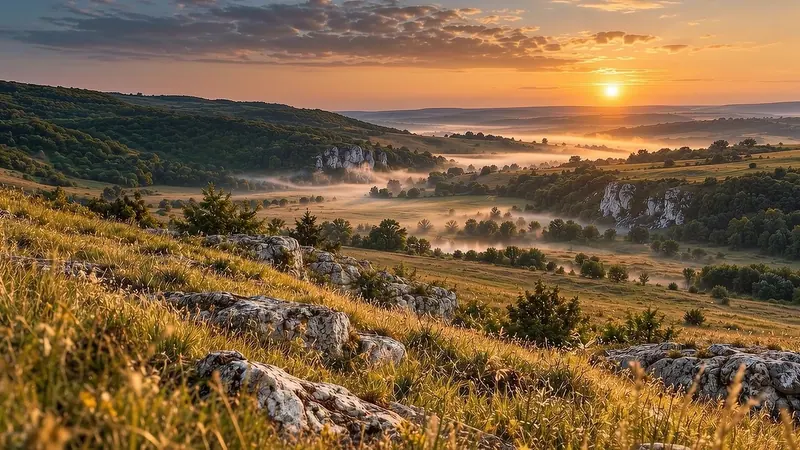
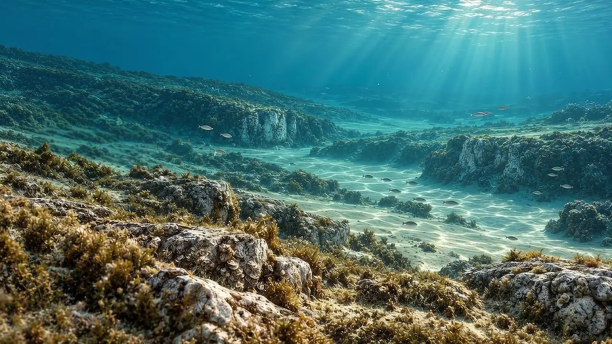
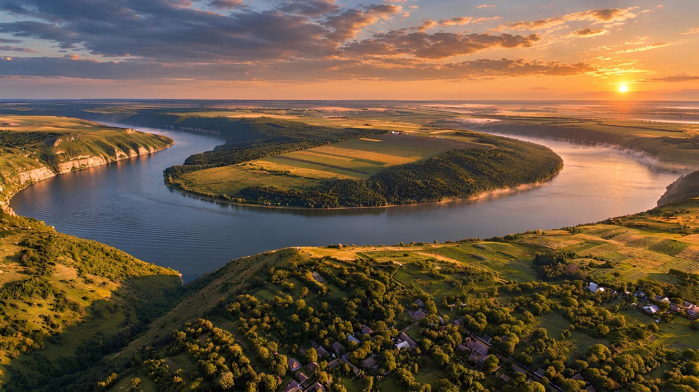

Невідома Україна / Історія 01
Море,
якого немає.
Подільські Товтри. Пейзаж, що пам’ятає море.
Прокрутіть сторінку — і побачте його минуле.
подорожувати в часі
Готуємо подорож…

01 / Прочитати пейзаж
Історія, записана в каменіВи стоїте
на дні давнього
моря.
Перед вами — пагорби, трави й білі скелі. Але колись тут було неглибоке тепле море.
Подільські Товтри — залишки рифових споруд міоцену. Їх будували вапнякові водорості, мохуватки, молюски та інші морські організми. Їхні рештки ставали частиною каменю.
Морські умови змінювалися. Згодом давні рифи опинилися на суходолі, а вивітрювання та ерозія відкрили їхні обриси. Сьогодні ми бачимо цей довгий процес як звичайний краєвид.
Навчитися помічати02 / Сліди залишилися
Атлас спостережень / 3 масштабиКамінь — це
пам’ять моря.
Від мушлі — до пасма пагорбів.
Оберіть масштаб і придивіться
до справжніх слідів минулого.
 Ілюстративний матеріал
Ілюстративний матеріалМорське життя → гірська порода
Мушля стає
частиною каменю.
Рештки морських організмів можуть зберігатися в осадовій породі. Це зображення допомагає придивитися до форм мушель і уявити, як сліди життя стають частиною вапняку.
Знайдіть спіральні мушлі та широкі ребристі стулки. Порівняйте їхні форми; масштабну лінійку на цьому зображенні не наведено.
Ілюстративний матеріал, наданий для проєкту. Точну географічну прив’язку й масштаб зображення не вказано.
01 / 03Ілюстративні зображення надані для проєкту. Геологічні пояснення спираються на джерела, наведені нижче.
А тепер змініть епоху03 / Ваша маленька експедиція
Змінюйте епоху. Досліджуйте деталі.У пейзажу є
що розповісти.
Посуньте межу між епохами.
Торкніться позначок, щоб прочитати
три підказки до цього краєвиду.

СьогодніДавнє моредо пейзажу
Прочитати рельєф
Пагорби, які починалися під водою.
Товтри зберігають обриси давніх рифових споруд. На справжній місцевості придивіться, як скелясті пасма піднімаються над навколишнім ландшафтом.
із собою
Той самий ракурс, різні епохи. Обидва зображення — художні візуалізації, а не документальні фотографії чи точна наукова модель.

04 / Повернутися в сьогодні
ПОДІЛЛЯ · УКРАЇНАПобачте це
на власні очі.
Тепер у цього краєвиду є історія.
Візьміть із собою три підказки —
і погляньте на Товтри по-новому.
Перед поїздкою уточніть доступність локації та правила парку. Спостерігайте, не пошкоджуючи породи й не збираючи скам’янілостей.
Про «ГЛИБШЕ»
Побачити Україну.
Зрозуміти, як вона виникла.
«ГЛИБШЕ» — проєкт про маловідому Україну через історії її ландшафтів. Ми пропонуємо сповільнитися, придивитися й побачити за знайомими місцями мільйони років змін.
Джерела та метод
Геологічні пояснення спираються на матеріали НПП «Подільські Товтри». Перехід між епохами — художня інтерпретація, що допомагає пояснити ідею.
Про походження Товтр Геологічна будова території